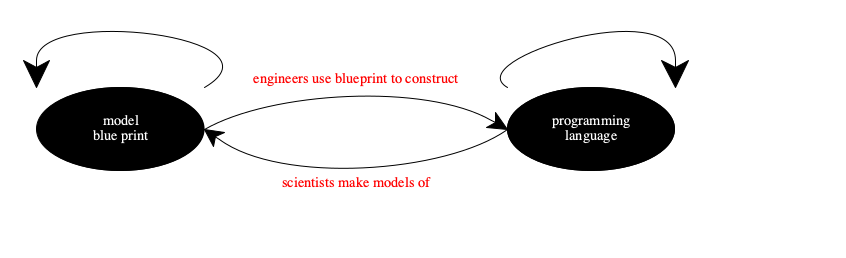

1 Programming Languages
Many colleges require some knowledge of a foreign language from their students. Acquiring a foreign language starts with learning about some basic words, then simple phrases. Later we may learn how to compose complex sentences. Indeed, many of us have studied our native language from this perspective, answering questions such as where words come from, what a grammatical sentence is, how idioms involved.
Acquiring a programming languages is just like acquiring a foreign spoken language. It takes an understanding of what its words are, how to form simple programs, and so on. Conversely, the designers of programming languages rely on these ideas. They know that they have to explain these concepts for newcomers.
Hence, these notions form the focus of programming language research. This chapter explains these notions abstractly. The remaining chapters exemplify them with well-known examples. Your work on exercises and projects is the way to solidify your understanding with hands-on work and at the same time provides some insight into the work of programming language researchers.
1.6 Models: Science and Engineering in Programming Languages |
1.1 Vocabulary, Reading
English uses 26 letters to make up words. Some European languages add in letters with accents and umlauts. The Thai alphabet is a huge superset. Hebrew and Arabic letters look totally different.
In the context of programming languages, “word” usually means identifier, keyword, label, number, variable, and so on. To this day, many languages restrict which “letters” may be used for which class of words; for example, many languages do not permit the use of a hyphen “-” or a greater-than sign “>” in an identifier, though Racket does. Until a couple of decades ago, ASCII was the dominant “alphabet” from which letters were drawn; now most use (a subset of) Unicode.
lexing, reading, and tokeninzing.
This book choose read for this act and reader for the software component. Because of the choice of JSON as the language for representing our programs in text, read is a bit more than the other two; precisely put, it involves a little bit of parsing already.
1.2 Grammar, Parsing
Not all sequences of words make up valid English sentences. While some of these sequences may make sense, we (try to) fall back on grammatically correct English if conversations get stuck because of this problem.
Similarly, only some arrangements of identifiers, keywords, numbers, and so on make up valid expressions, statements, declarations, and complete programs. For a programming language, getting this arrangement right is far more important than for a natural language because code is not only a message from one programmer to another but also an instruction to the language implementation, which is a rather inflexible algorithm compared to the human brain.
grammar
syntax
parser
Sequence[ Word ] --> Boolean |
Furthermore, a Boolean response is also unhelpful for thinking through the computations that a program demands. Or, as programming language people put it for determining the meaning of a program.
SequenceOf[ Word ] --> TreeOf [ Word , String ] |
Although parsing is also reasonably well understood and realized with standard components, this book will introduce its most rudimentary ideas. Foremost is the idea of abstract syntax, which is the generated tree is called. Most researchers do not view a programming language in terms of its concrete syntax, but from the viewpoint of abstract syntax. Hence it is critical to understand what it represents and how it comes about.
1.3 Idioms, Pragmatics
Once you know how to arrange “please”, “thank you,” “food,” and “drink” into short phrases in a foreign language, you may think it is time to travel to foreign countries. If you have done this and tried to listen to native speakers of converse in your new language, you have discovered that languages don’t work this way. Native speakers use idioms to talk to each others and to foreigners. They may understand your replies but if you want to have interesting conversations, you will eventually have to understand then use idioms.
In this regard, a programming language is again extremely similar to a natural language. It is simply not true that you can program in a language once you know only how to form words and sentences. What you can do then is write code that performs computations. Experts in this language may shake their head, however, when they read your code.
pragmatics and idiomatic style.
how to form identifiers: camel cap style (capital letters) vs snake case (underscores)
how to separate sentences and how to break lines;
how to use classes, methods, functions;
where to place interfaces, dependencies, and implementations; or
which JSON libraries are best for a given task.
Even though all of us acknowledge the importance of pragmatics and language
idioms, none study these elements in any depth. To some extent, many of these
elements are considered langauge-specific and therefore only of interest to the
people who program in a specific language—
1.4 Meaning, Execution
When you first learn a language, your parents and friends relate words to concrete objects. Their meaning is totally clear. As we grow older, we encounter unknown words, some of which denote concrete objects and some just abstract concepts. At that point, a natural language becomes a programming language for minds. Since we don’t really understand minds, we also don’t really understand how meaning is transported from one mind to another. The meaning of sentences, paragraphs, chapters, and books is even more difficult to figure out.
two implementations of the same language may return two different answers (outputs, final results) for the same program. How can we decide which one is correct?
if there is only one implementation of the language, a program execution may still produce a strange answer. How can a programmer decide whether the implementation is buggy?
in many cases, the designers of a language and its implementors are two different groups. For some languages they are possibly identical or overlap; for widely implemented languages, the two teams almost never intersect. How can a language designer communicate the meaning of a language to a language implementor?
when a software developer introduces an intern to a code base and a new (to the latter) programming language, part of the communication problem concerns the subtly different meaning of constructs in different languages. How can software developers effectively communicate about programming languages and the meaning of programs?
every introductory course on Programming must get students to learn a new foreign language. Beginners barely know enough about computers, so explaining the meaning of programs in terms of an implementation (and its execution) is clearly a non-starter. How should instructors of beginning students convey the meaning of “first” programs?
semantics
abstract machines, which explain programs execution in terms of high-level data structures and relations between data structures that resemble machine instructions.
interpreters, which are programs written in a so-called meta-language that compute the meaning of the object programs.
1.5 Conversational Context, Static Checking
As you progress from beginner to proficient and perhaps fluent speaker of a foreign language, you get engaged in increasingly sophisticated, long-running conversations. One outstanding feature of such conversations is context, that is, conversational context builds up over time and the participants refer to it implicitly. You can even think of a scientific area as a long-standing conversation among the participating scientists (dead and alive) that has built up a tremendous context. A novice in this world can easily say correct sentences that do not connect to, or are even wrong, in this conversational context.
Programming languages are no different. A program consists of many paragraphs, think packages and modules, and those consist of many sentences, think methods and functions; and then there are expressions and statements within methods and functions. Identifiers in these expressions refer to methods that may originate in far-away packages. Using such identifiers correctly is critical because the creator of the method may have had certain constraints in mind. The worst part is that if a method is used incorrectly, it may not enforce the constraints and, during program execution, the error may manifest itself in a totally different place.
static checking, which means ensuring that certain constraints are satisfied before the program is run and, by implication, preventing certain errors of meaning during program execution.
identifier checking and type checking.
Over the past couple of decades, this area of programming languages has gotten
by far the most attention. Researchers have come to embrace the idea that static
type checking can almost guarantee the correct working of software. In
support of this idea, they have developed increasingly sophisticated ways of
expression type constraints—
This book provides a basic introduction to this area. A reader will understand what types do contribute to software safety, and the complexities they inject into the developer’s world. Scientifically inclined readers will have a reasonable basis to read article and books that dive deep into this vast area.
1.6 Models: Science and Engineering in Programming Languages
How do researchers study programming language? How do designers create them?

Figure 8: Programming languages and their models and blueprints
On one side, we have a science-based style of investigation. Like natural scientists, researchers “find” programming languages in “nature” and attempt to understand how they relate to the common principles of the field.
To this end, they build a model of the aspects in which they are interested. A model is not the real “thing.” It is an approximation. It is smaller than the actual language. But it permits researchers to predict how the actual language behaves.
Once people have a model—
perhaps not theirs— they occasionally study models for the sake of models. Then they turn into logicians and mathematicians, and they need to work hard not to lose touch with the underlying language. On the other side we have an engineering-oriented style of construction. Like civil engineers, language creators who build actual programming languages from blueprints.
A brand-new language is drawn up like a blueprint. The designers start from their basic idea of what their new language is all about, which results in a design document. Different “chapters” describe different parts of the language: the vocabulary, the grammar, the semantics, the type system, and so on. The designers translate these design chapters into a language implementation, they learn from this translation, and they may change some aspects on the fly. So the finished language resembles the design documents the way an actual house resembles a blueprint.
Once the language exists, people continue to develop the code of the implementation. They then turn into programmers, and they need to remind themselves routinely of the ideas that started the design process.
In the ideal world, the blueprints of the engineers and the models of scientists should be made from the same material. But, often they are not. Design documents still tend to use a mix of formal presentations (for vocabularies and grammars) and informal English for the parts that go beyond syntax, supplemented by interpreters. For some of the recent major language design efforts, people have started to use abstract machines, virtual machines, and some elements from modeling. Still, models are almost exclusively formulated in a style of mathematics that have evolved over decades. More recently, these mathematical models are formulated in programming languages that look and feel almost like mathematics. In turn, these programs make the model a basis for experimentation and exploration via ordinary program execution. Over the long haul, we may yet see a convergence.
This book will use a mix of simple techniques to create models and blueprints. The goal is to explain the principles of programming languages and to demonstrate some of the methods used in this area. One chapter will relate the models to your favorite programming language, closing the cycle from figure 8.
1.7 Summary
its syntax, which spells out how to form words and how to compose words into expressions, definitions, statements, programs and other “sentences;”
its semantics, which assigns meaning to words and sentences and is a complete prediction of how a program executes;
its context-sensitive constraints, which may simply require that all identifiers are defined or impose a complex type system; and
its pragmatics, mostly the idioms “native” programmers use.
Studying the principles of programming language calls for two views due to the dual nature of this artifact. One view focuses on the language as a physical product whose programs makes bits flow on hardware. The other view emphasizes the Platonic “idea” of the artifact, for which researchers tend to use a mix of mathematics and programming. This book demonstrates how this views are related and how they are used to study the basics.
The above notions are just the basics, however. First the list isn’t exhaustive as far as technical issues are concerned. Only several years of graduate studies in just programming languages can fill this gap. Second, a full-fledged acquisition also demands an understanding of its psychology and sociology (community reception and communication), its software engineering practice (best practices, patterns that fill gaps), its management context (value to a business), and many more. Although nobody denies the importance of these extra-technical ideas and their relationship to technical ones, experts know too little to include material on them in an undergraduate text book.